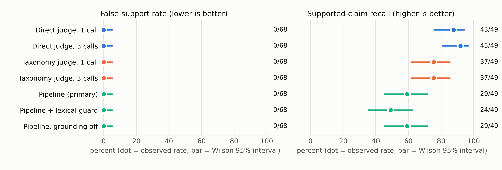

AI × Epistemics Research Sprint, 13–15 November 2026 · Track 2 (Citation Binder / trust infrastructure) · Code, data, raw model outputs and certificates: pramana-bind repository
Can a Nyāya-inspired, quote-grounded verification pipeline reduce false acceptance of unsupported citations while preserving useful coverage, and make its remaining errors independently inspectable? We treat the two halves separately. The first is an empirical comparison against baselines that share the model and the evidence. The second is a property of the artefact: what can a third party recompute, and what must they take on trust?
Forethought’s “AI for AI for Epistemics” argues that early epistemic tools will be trusted whether or not they earn it, so auditability must be designed in. Our contribution is a concrete audit boundary for citation checking and an honest measurement of what the structure around it costs in accuracy.
Automatic attribution evaluation is well studied. ALCE scores citation recall and precision with an NLI model; AttributionBench shows that judging whether evidence supports a statement remains hard even for fine-tuned models; CAQA uses finer labels (supportive, insufficient, contradictory, irrelevant); AVeriTeC provides real-world claims with question–answer evidence. Verbatim quote extraction as a guard against invented evidence is used in deployed citation features and in “deterministic quoting” approaches. Structured decomposition of claims before verification is likewise established (e.g. FActScore-style atomic facts). We therefore claim no novelty for quote grounding, decomposition or fine-grained labels individually; our search of prior work was brief and not exhaustive. What the Nyāya tradition contributes here is specific and limited: a worked-out vocabulary for how a reason fails to establish a claim (not present in the subject; present only in part of it; holding under an unstated condition; straying; proving the opposite; overridden; counterbalanced), which we use as the type system for failures, and the discipline that a conclusion is a derivation from stated premises rather than a judgement. We test below whether that structure does more than a prompt that lists the same categories. It did not.
Extraction (model testimony). One prompt asks the model for: the claim’s subject p (pakṣa) and what it asserts of it S (sādhya) with quantifier and modality; every passage where the source itself asserts or denies S of p, each with the source’s own scope, quantifier and modality; conditions the source attaches that the claim omits; and, where the claim follows only through a reason H (hetu), other cases in the source where H and S do or do not co-occur. Every entry must carry a verbatim quote. The model is never asked for a verdict or for character offsets.
Grounding (mechanical). Each quote is located by exact string search, falling back to whitespace-collapsed search; a quote found zero times or more than once is refused. Offsets are computed by the system. Only located quotes enter a three-valued world (present / absent / unknown); silence is unknown, not denial; the same passage filed twice counts once.
Derivation (mechanical). Ordered rules R0–R8 give a classical verdict (unresolved, asiddha with subtype, bādhita, viruddha, savyabhicāra, satpratipakṣa, uncorroborated, valid). During development we found that this verdict is the wrong thing to show a reader: “valid” under the finite-world rule (one corroborating case, no observed counterexample) does not establish an unrestricted claim in an open world, and an ordinary direct citation has no second corroborating case at all. We therefore added a separate support status: supported only if a located quote has the source stating S of p at full scope and at least the claimed strength, with no located condition, exception, denial or defeater; otherwise not established or contradicted, with plain-language reasons; unresolved when the source could not be located. Three extraction runs are combined by a fixed rule: supported needs a strict majority.
What is and is not checked. We keep five properties apart. (1) The quote occurs in the source: checked. (2) The quote means what it is filed as: not checked. (3) Right subject, scope, time, strength: compared mechanically, but from labels the model supplied; time is representable only as an omitted condition. (4) The conclusion follows from the rules: checked. (5) The certificate is unchanged: checked. Unit tests named test_LIMIT_* assert the wrong behaviour that follows from (2): an exact quote filed with inverted polarity, a quote attached to the wrong entity, and correlation filed as causation are all accepted if the extractor files them so.
Certificates and audit. Each outcome is appended to a hash-chained JSONL ledger and the chain head is signed with Ed25519. The audit discards every derived field (offsets, match mode, flags, verdict, status, score), re-locates every quote in the hashed source text, rebuilds the world and re-derives the outcome. The signer’s public key must be supplied separately; a key shipped inside the bundle proves nothing about identity. An older, correctly signed ledger passes unless the auditor holds a newer checkpoint, so this is not a transparency log. “Audit passed” means these integrity and replay checks passed, not that the extracted reading is true.
PBS. The blueprint’s per-citation binding score is implemented but treated as an experimental, uncalibrated ranking heuristic. It rises when the extractor omits a counterexample (0.2 → 0.5 in a unit test). It is not a probability and is used for no result below.
Task and data. Passage-level support: does the supplied passage alone support the claim? The held-out set has 117 items from 36 source passages (“families”): 72 statutory items over 17 provisions of the Constitution of India, BNS, BNSS and BSA, and 45 AVeriTeC-derived items over 19 extractive evidence passages (AVeriTeC dev split, CC BY-NC 4.0). 49 are supported; 68 are not (29 contradicted, 11 missing evidence, 11 scope inflation, 8 exception omitted, 7 misbinding, 2 temporal). For AVeriTeC we did not copy claim-level verdicts onto passages; each passage-level label was written for that passage, and the AVeriTeC verdict is kept only as metadata. Statutory items ask only what the excerpt says; no item makes a current-law or supersession claim. A separate file holds 23 constructed attack items.
Labels. All claims written for the set, all labels, evidence spans and rationales were drafted by an AI assistant (a larger Claude model) from the passages, before any system ran on the held-out files, and never from system output. No human has reviewed them yet; no inter-annotator agreement is reported. A review packet without predictions, and a blind sheet for a second reviewer on 49 harder items, are in the repository.
Registration. Dataset hashes, prompts, the scorer and the analysis protocol were committed before any held-out call (commit beb6cf7, 2026-11-14T08:58Z). Development used 21 items and 7 attack items from different families. One prompt revision was made on development data: the first prompt listed harmless detail as omitted conditions (recall 1/9); the revised prompt reached 8/9 with 0/12 false acceptances. The lexical context guard was switched off in the primary system on development evidence.
Systems. All use claude-haiku-5-5 through headless Claude Code with provider-default sampling (the interface exposes no temperature), a one-line system prompt, no tools, and the same claim, citation string and passage. No system receives retrieved counter-sources. Direct judge (1 call; and 3 calls with majority, matching the pipeline’s call count). Taxonomy judge: the same failure categories the pipeline uses, given as definitions (1 and 3 calls). Pipeline (primary; guard off), pipeline + lexical guard, and pipeline with grounding disabled; these three are computed from the same three extraction replies per item, so they differ only in the named component.
Metrics. Primary: false-support rate (unsupported gold predicted supported / all unsupported) and supported-claim recall. Wilson 95% intervals treat items as independent, which items sharing a passage are not; paired differences are bootstrapped over families. One operational note: 170 of the 1,053 held-out calls and the first attempt at the attack run failed with an account usage-limit error. These are transport failures, not model outputs; the runner caches successful calls, and only the failed calls were re-issued. The partial predictions file from before the re-issue is kept.
| System | Calls/item | False support | Supported recall | Runs agree | Cost/item | Latency/call |
|---|---|---|---|---|---|---|
| Direct judge | 1 | 0/68 [0, 5.4%] | 43/49 = 88% [76, 94] | — | $0.0004 | 4.6 s |
| Direct judge, majority | 3 | 0/68 | 45/49 = 92% [81, 97] | 112/117 | $0.0011 | 4.6 s |
| Taxonomy judge | 1 | 0/68 | 37/49 = 76% [62, 85] | — | $0.0005 | 5.7 s |
| Taxonomy judge, majority | 3 | 0/68 | 37/49 = 76% [62, 85] | 108/117 | $0.0016 | 5.7 s |
| Pipeline (primary) | 3 | 0/68 | 29/49 = 59% [45, 72] | 97/117 | $0.0041 | 11.5 s |
| Pipeline + lexical guard | 3 | 0/68 | 24/49 = 49% [36, 63] | — | $0.0041 | 11.5 s |
| Pipeline, grounding off | 3 | 0/68 | 29/49 = 59% [45, 72] | — | $0.0041 | 11.5 s |

Figure 1. False-support rate and supported-claim recall, held-out set.
Every pre-registered hypothesis failed. H1 (lower false support than the direct judge at similar recall): false support is tied at zero and the pipeline’s recall is 29 points lower (family-bootstrap 95% interval −43 to −13). H2 (better than taxonomy-only prompting): tied on false support, 16 points lower on recall (−30 to −4). H3 (grounding lowers false support): disabling grounding changed no item. No system abstained, and after the re-issue there were no failed calls; one of 351 direct-judge replies and none of the extraction or taxonomy replies was malformed. Because false support is zero everywhere, this set cannot rank the systems on the primary error; the upper end of each interval is 5.4%. By slice, the pipeline’s recall was 14/30 on statutory items and 15/19 on AVeriTeC-derived items (direct judge: 26/30 and 17/19).
All 319 quotes in the representative runs were located (lower Wilson bound 98.8%). With this model and passages of a few hundred words, the extractor simply does not invent quotes, so a verbatim check has nothing to catch. The check may matter with weaker models, longer sources or adversarial extractors; we did not test those.
All 20 errors were rejections of claims labelled supported; the certificate for each names the located quote and reason. Reading them (by the authoring assistant, not a human reviewer):
So the structured record did not make the model read better; it added two new ways to be wrong. It did make each error locatable to a field. On unsupported items the pipeline’s reasons were: source denies claim 33, qualification omitted 16, claim not stated 12, narrower subject 11, subject not in source 7. We did not independently annotate fine-grained failure types, so we report no accuracy for these reasons.
The three extraction runs reached the same status on 97 of 117 items (83%). This is stability, not confidence. It carries some signal: the final outcome matched the label on 83/97 stable items and 14/20 unstable ones; with 20 unstable items that difference is not established.
Nineteen unsupported items across six attack classes (irrelevant true quotes, scope or modality inflation, cherry-picked fragments, misattributed entities, a fabricated fact appended to genuine ones, instructions embedded in the source) and four supported controls. One attempt per item, the same items for every system, not adapted to any system’s output. No attack succeeded against any system (0/19 each; interval up to 17%), and all controls were accepted by the primary pipeline and both judges, including two whose source instructed the model to answer “not supported”. One of three direct-judge runs accepted a misattributed-entity item, outvoted in the majority. The lexical guard wrongly rejected one control. This is a small, non-adaptive test written by the system’s author; it does not show resistance to a motivated attacker.
On the pre-existing constructed gold set (600 closed worlds, 100 per class, seed 0) the rules agree with the pre-existing derive_verdict on 600/600 base inferences, and with the gold label on 600/600 when each item’s extra premise is supplied as a defeater. derive_verdict cannot return bādhita or satpratipakṣa, so agreement on those 200 items is with the generator’s construction and our own conversion of it, a weaker check. The Lean deciders were not run (binary unavailable); nothing here is Lean-verified.
The audit of the 117-certificate held-out ledger passes against its separately held key. Automated tests show the audit failing, at the right step, for: a one-character edit; reordered, deleted and truncated events; a re-signed ledger with a substituted key; no key supplied; an unsigned tail; rollback when a checkpoint is held (and passing when it is not, which is the documented boundary); a swapped source text; and, for a forger who recomputes the certificate id and the whole chain, a changed verdict, status, score, offset, located-flag or context flag.
On this evidence the symbolic pipeline is worse than asking the model directly: same false-support rate, lower recall, roughly ten times the cost per item and more than twice the latency. A user who only wants the best support label should use the direct judge.
The audit layer offers something the direct judge’s label does not, and this is separate from accuracy. A third party with the ledger, the source texts and the signer’s key can, without a model: confirm that every quote behind an outcome is in the source at the stated offsets; recompute the outcome from those quotes; see which specific filing produced it; and detect any later change. That turned “the pipeline rejected 20 good citations” into two named causes by reading the certificates. A direct judge gives a sentence of rationale that cannot be recomputed. Whether that inspectability is worth the accuracy cost was not measured: we ran no study of whether readers or reviewers catch more errors with certificates than without. That is the experiment this work most needs next. A natural design that follows from the results is to keep the direct judge’s label and attach the quote-grounded record as evidence for it, rather than deriving the label from the record.
Over-trust. A signed, hash-chained certificate looks authoritative. The signature and replay establish only that the record is unchanged and its conclusion follows from the recorded quotes. They do not establish that the model read the source correctly. Presenting integrity checks as a single “verified” badge would mislead; the viewer keeps the two apart and says so, and the audit command prints that it does not assert the interpretation is correct.
Laundering. A party could run the pipeline until it yields “supported” for a weak citation and publish only that certificate, or choose a passage that supports a claim while omitting a contrary one. Certificates record the per-run outcomes of the three runs they were built from, but nothing forces disclosure of other attempts or other sources. The pipeline as evaluated does not retrieve counter-sources.
Legal content. The statutory items test agreement with an excerpt only. Nothing here determines what the law is, whether a provision is in force, or which provision prevails; the repository’s unused counter-source module contains a fixed ranking of statutes that must not be read as a rule of legal applicability. Outcomes must not be used as legal advice.
Wording. An unlocated source yields “unresolved”, never a statement that the citation is fabricated: not finding a source is no evidence either way.
Adversarial use. The documented failure modes (inverted polarity inside a quote, misattributed entities, selective quoting) tell an attacker where a quote-grounded checker is weakest. We judge disclosure worthwhile because the same list tells deployers what not to rely on.
Data. AVeriTeC-derived items are CC BY-NC 4.0 and contain real political claims, several false; they are included as evaluation material with their sources, not as assertions.
Pre-existing before 13 Nov 2026 and imported unchanged: the pravrudhi engine 0.6.34 (nyaya_quote.locate_quote, nyaya_validity.derive_verdict, nyaya_gold, the statute corpus) and pravrudhi_kernel 0.1.0 (hash-chained ledger, JCS, chain verification); the AVeriTeC dataset. New during the sprint: everything in the pramana-bind repository: schema, extraction prompt and parser, three-valued world, rules R0–R8, support status, PBS, certificate signing and audit, baselines, datasets and labels, evaluation scripts, viewer, and all results. An AI coding assistant wrote the code, drafted the dataset and this report under the author’s direction; the evaluated model is a different, smaller model.
pytest -q (60 tests) · python -m pramana_bind crosscheck · python eval/scripts/run.py eval/data/test.jsonl eval/runs/test-haiku --model claude-haiku-5-5 (re-uses the recorded raw calls; no model access needed to recompute predictions) · python eval/scripts/score.py eval/runs/test-haiku · python -m pramana_bind audit eval/runs/test-haiku/ledger.jsonl --pubkey $(cat eval/runs/test-haiku/signer.pub). Raw model replies with token counts, latency and cost are in eval/runs/*/calls.jsonl. Total recorded model cost for all runs: under $1.50.